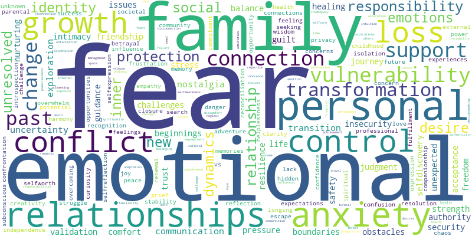
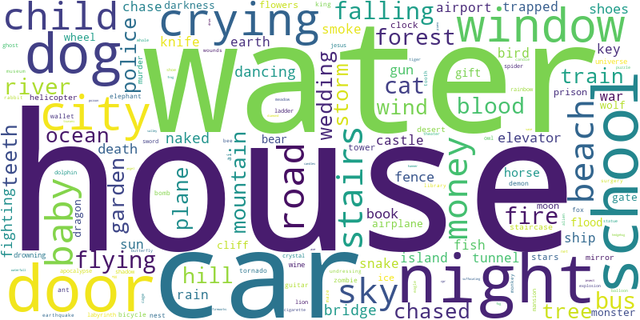

<h1 style="text-align:center;">Dreamverse State</h1>
<h2 style="text-align:center;">November 29, 2024</h2>
<div style="padding: 80px;"><html>
    <head>
        <meta charset="utf-8">
        
            <script src="lib/bindings/utils.js"></script>
            <link rel="stylesheet" href="https://cdnjs.cloudflare.com/ajax/libs/vis-network/9.1.2/dist/dist/vis-network.min.css" integrity="sha512-WgxfT5LWjfszlPHXRmBWHkV2eceiWTOBvrKCNbdgDYTHrT2AeLCGbF4sZlZw3UMN3WtL0tGUoIAKsu8mllg/XA==" crossorigin="anonymous" referrerpolicy="no-referrer" />
            <script src="https://cdnjs.cloudflare.com/ajax/libs/vis-network/9.1.2/dist/vis-network.min.js" integrity="sha512-LnvoEWDFrqGHlHmDD2101OrLcbsfkrzoSpvtSQtxK3RMnRV0eOkhhBN2dXHKRrUU8p2DGRTk35n4O8nWSVe1mQ==" crossorigin="anonymous" referrerpolicy="no-referrer"></script>
            
        
<center>
<h1></h1>
</center>

<!-- <link rel="stylesheet" href="../node_modules/vis/dist/vis.min.css" type="text/css" />
<script type="text/javascript" src="../node_modules/vis/dist/vis.js"> </script>-->
        <link
          href="https://cdn.jsdelivr.net/npm/bootstrap@5.0.0-beta3/dist/css/bootstrap.min.css"
          rel="stylesheet"
          integrity="sha384-eOJMYsd53ii+scO/bJGFsiCZc+5NDVN2yr8+0RDqr0Ql0h+rP48ckxlpbzKgwra6"
          crossorigin="anonymous"
        />
        <script
          src="https://cdn.jsdelivr.net/npm/bootstrap@5.0.0-beta3/dist/js/bootstrap.bundle.min.js"
          integrity="sha384-JEW9xMcG8R+pH31jmWH6WWP0WintQrMb4s7ZOdauHnUtxwoG2vI5DkLtS3qm9Ekf"
          crossorigin="anonymous"
        ></script>


        <center>
          <h1></h1>
        </center>
        <style type="text/css">

             #mynetwork {
                 width: 100%;
                 height: 750px;
                 background-color: #2b252f;
                 border: 1px solid lightgray;
                 position: relative;
                 float: left;
             }

             

             

             
        </style>
    </head>


    <body>
        <div class="card" style="width: 100%">
            
            
            <div id="mynetwork" class="card-body"></div>
        </div>

        
        

        <script type="text/javascript">

              // initialize global variables.
              var edges;
              var nodes;
              var allNodes;
              var allEdges;
              var nodeColors;
              var originalNodes;
              var network;
              var container;
              var options, data;
              var filter = {
                  item : '',
                  property : '',
                  value : []
              };

              

              

              // This method is responsible for drawing the graph, returns the drawn network
              function drawGraph() {
                  var container = document.getElementById('mynetwork');

                  

                  // parsing and collecting nodes and edges from the python
                  nodes = new vis.DataSet([{"color": "purple", "font": {"color": "white"}, "id": "nostalgia", "label": "nostalgia", "shape": "dot", "title": "nostalgia"}, {"color": "red", "font": {"color": "white"}, "id": "friendship", "label": "friendship", "shape": "dot", "title": "friendship"}, {"color": "red", "font": {"color": "white"}, "id": "house", "label": "house", "shape": "dot", "title": "house"}, {"color": "red", "font": {"color": "white"}, "id": "vulnerability", "label": "vulnerability", "shape": "dot", "title": "vulnerability"}, {"color": "purple", "font": {"color": "white"}, "id": "school", "label": "school", "shape": "dot", "title": "school"}, {"color": "red", "font": {"color": "white"}, "id": "anxiety", "label": "anxiety", "shape": "dot", "title": "anxiety"}, {"color": "purple", "font": {"color": "white"}, "id": "communication", "label": "communication", "shape": "dot", "title": "communication"}, {"color": "purple", "font": {"color": "white"}, "id": "change", "label": "change", "shape": "dot", "title": "change"}, {"color": "purple", "font": {"color": "white"}, "id": "support", "label": "support", "shape": "dot", "title": "support"}, {"color": "purple", "font": {"color": "white"}, "id": "growth", "label": "growth", "shape": "dot", "title": "growth"}, {"color": "purple", "font": {"color": "white"}, "id": "nurturing", "label": "nurturing", "shape": "dot", "title": "nurturing"}, {"color": "purple", "font": {"color": "white"}, "id": "new beginnings", "label": "new beginnings", "shape": "dot", "title": "new beginnings"}, {"color": "purple", "font": {"color": "white"}, "id": "door", "label": "door", "shape": "dot", "title": "door"}, {"color": "red", "font": {"color": "white"}, "id": "transformation", "label": "transformation", "shape": "dot", "title": "transformation"}, {"color": "purple", "font": {"color": "white"}, "id": "boundaries", "label": "boundaries", "shape": "dot", "title": "boundaries"}, {"color": "red", "font": {"color": "white"}, "id": "family", "label": "family", "shape": "dot", "title": "family"}, {"color": "purple", "font": {"color": "white"}, "id": "loss", "label": "loss", "shape": "dot", "title": "loss"}, {"color": "purple", "font": {"color": "white"}, "id": "crying", "label": "crying", "shape": "dot", "title": "crying"}, {"color": "purple", "font": {"color": "white"}, "id": "dog", "label": "dog", "shape": "dot", "title": "dog"}, {"color": "purple", "font": {"color": "white"}, "id": "selfdiscovery", "label": "selfdiscovery", "shape": "dot", "title": "selfdiscovery"}, {"color": "red", "font": {"color": "white"}, "id": "car", "label": "car", "shape": "dot", "title": "car"}, {"color": "purple", "font": {"color": "white"}, "id": "insecurity", "label": "insecurity", "shape": "dot", "title": "insecurity"}, {"color": "purple", "font": {"color": "white"}, "id": "relationships", "label": "relationships", "shape": "dot", "title": "relationships"}, {"color": "purple", "font": {"color": "white"}, "id": "child", "label": "child", "shape": "dot", "title": "child"}, {"color": "purple", "font": {"color": "white"}, "id": "shoes", "label": "shoes", "shape": "dot", "title": "shoes"}, {"color": "purple", "font": {"color": "white"}, "id": "exploration", "label": "exploration", "shape": "dot", "title": "exploration"}, {"color": "red", "font": {"color": "white"}, "id": "fear", "label": "fear", "shape": "dot", "title": "fear"}, {"color": "purple", "font": {"color": "white"}, "id": "resilience", "label": "resilience", "shape": "dot", "title": "resilience"}, {"color": "purple", "font": {"color": "white"}, "id": "hill", "label": "hill", "shape": "dot", "title": "hill"}, {"color": "purple", "font": {"color": "white"}, "id": "community", "label": "community", "shape": "dot", "title": "community"}, {"color": "purple", "font": {"color": "white"}, "id": "night", "label": "night", "shape": "dot", "title": "night"}, {"color": "red", "font": {"color": "white"}, "id": "protection", "label": "protection", "shape": "dot", "title": "protection"}, {"color": "purple", "font": {"color": "white"}, "id": "water", "label": "water", "shape": "dot", "title": "water"}, {"color": "purple", "font": {"color": "white"}, "id": "betrayal", "label": "betrayal", "shape": "dot", "title": "betrayal"}, {"color": "purple", "font": {"color": "white"}, "id": "naked", "label": "naked", "shape": "dot", "title": "naked"}, {"color": "purple", "font": {"color": "white"}, "id": "family dynamics", "label": "family dynamics", "shape": "dot", "title": "family dynamics"}, {"color": "purple", "font": {"color": "white"}, "id": "identity", "label": "identity", "shape": "dot", "title": "identity"}, {"color": "purple", "font": {"color": "white"}, "id": "blood", "label": "blood", "shape": "dot", "title": "blood"}, {"color": "purple", "font": {"color": "white"}, "id": "trust", "label": "trust", "shape": "dot", "title": "trust"}, {"color": "purple", "font": {"color": "white"}, "id": "beach", "label": "beach", "shape": "dot", "title": "beach"}, {"color": "purple", "font": {"color": "white"}, "id": "road", "label": "road", "shape": "dot", "title": "road"}, {"color": "purple", "font": {"color": "white"}, "id": "challenge", "label": "challenge", "shape": "dot", "title": "challenge"}, {"color": "purple", "font": {"color": "white"}, "id": "snake", "label": "snake", "shape": "dot", "title": "snake"}, {"color": "purple", "font": {"color": "white"}, "id": "control", "label": "control", "shape": "dot", "title": "control"}, {"color": "purple", "font": {"color": "white"}, "id": "window", "label": "window", "shape": "dot", "title": "window"}, {"color": "red", "font": {"color": "white"}, "id": "responsibility", "label": "responsibility", "shape": "dot", "title": "responsibility"}, {"color": "purple", "font": {"color": "white"}, "id": "personal growth", "label": "personal growth", "shape": "dot", "title": "personal growth"}, {"color": "purple", "font": {"color": "white"}, "id": "renewal", "label": "renewal", "shape": "dot", "title": "renewal"}, {"color": "purple", "font": {"color": "white"}, "id": "river", "label": "river", "shape": "dot", "title": "river"}, {"color": "purple", "font": {"color": "white"}, "id": "past relationships", "label": "past relationships", "shape": "dot", "title": "past relationships"}, {"color": "purple", "font": {"color": "white"}, "id": "guidance", "label": "guidance", "shape": "dot", "title": "guidance"}, {"color": "purple", "font": {"color": "white"}, "id": "security", "label": "security", "shape": "dot", "title": "security"}, {"color": "purple", "font": {"color": "white"}, "id": "grief", "label": "grief", "shape": "dot", "title": "grief"}, {"color": "purple", "font": {"color": "white"}, "id": "transition", "label": "transition", "shape": "dot", "title": "transition"}, {"color": "purple", "font": {"color": "white"}, "id": "wedding", "label": "wedding", "shape": "dot", "title": "wedding"}, {"color": "purple", "font": {"color": "white"}, "id": "uncertainty", "label": "uncertainty", "shape": "dot", "title": "uncertainty"}, {"color": "purple", "font": {"color": "white"}, "id": "journey", "label": "journey", "shape": "dot", "title": "journey"}, {"color": "purple", "font": {"color": "white"}, "id": "train", "label": "train", "shape": "dot", "title": "train"}, {"color": "purple", "font": {"color": "white"}, "id": "intimacy", "label": "intimacy", "shape": "dot", "title": "intimacy"}, {"color": "purple", "font": {"color": "white"}, "id": "desire", "label": "desire", "shape": "dot", "title": "desire"}, {"color": "purple", "font": {"color": "white"}, "id": "connection", "label": "connection", "shape": "dot", "title": "connection"}, {"color": "purple", "font": {"color": "white"}, "id": "relationship dynamics", "label": "relationship dynamics", "shape": "dot", "title": "relationship dynamics"}, {"color": "purple", "font": {"color": "white"}, "id": "jealousy", "label": "jealousy", "shape": "dot", "title": "jealousy"}]);
                  edges = new vis.DataSet([{"from": "nostalgia", "to": "friendship", "value": 5}, {"from": "nostalgia", "to": "house", "value": 8}, {"from": "nostalgia", "to": "vulnerability", "value": 4}, {"from": "nostalgia", "to": "school", "value": 8}, {"from": "friendship", "to": "house", "value": 5}, {"from": "friendship", "to": "school", "value": 5}, {"from": "friendship", "to": "anxiety", "value": 5}, {"from": "friendship", "to": "communication", "value": 4}, {"from": "friendship", "to": "change", "value": 5}, {"from": "friendship", "to": "support", "value": 4}, {"from": "house", "to": "support", "value": 4}, {"from": "house", "to": "door", "value": 8}, {"from": "house", "to": "change", "value": 8}, {"from": "house", "to": "anxiety", "value": 8}, {"from": "house", "to": "transformation", "value": 6}, {"from": "house", "to": "school", "value": 4}, {"from": "house", "to": "boundaries", "value": 4}, {"from": "house", "to": "family", "value": 13}, {"from": "house", "to": "loss", "value": 5}, {"from": "house", "to": "crying", "value": 5}, {"from": "house", "to": "dog", "value": 4}, {"from": "house", "to": "selfdiscovery", "value": 6}, {"from": "house", "to": "vulnerability", "value": 8}, {"from": "house", "to": "car", "value": 8}, {"from": "house", "to": "insecurity", "value": 4}, {"from": "house", "to": "relationships", "value": 6}, {"from": "house", "to": "child", "value": 4}, {"from": "house", "to": "shoes", "value": 4}, {"from": "house", "to": "exploration", "value": 4}, {"from": "house", "to": "fear", "value": 5}, {"from": "house", "to": "resilience", "value": 4}, {"from": "house", "to": "hill", "value": 4}, {"from": "vulnerability", "to": "relationships", "value": 4}, {"from": "vulnerability", "to": "night", "value": 5}, {"from": "vulnerability", "to": "car", "value": 9}, {"from": "vulnerability", "to": "fear", "value": 5}, {"from": "vulnerability", "to": "protection", "value": 10}, {"from": "vulnerability", "to": "transformation", "value": 4}, {"from": "vulnerability", "to": "water", "value": 5}, {"from": "vulnerability", "to": "family", "value": 4}, {"from": "vulnerability", "to": "anxiety", "value": 6}, {"from": "vulnerability", "to": "door", "value": 7}, {"from": "vulnerability", "to": "betrayal", "value": 5}, {"from": "vulnerability", "to": "naked", "value": 5}, {"from": "vulnerability", "to": "insecurity", "value": 4}, {"from": "vulnerability", "to": "exploration", "value": 4}, {"from": "vulnerability", "to": "family dynamics", "value": 4}, {"from": "vulnerability", "to": "identity", "value": 4}, {"from": "vulnerability", "to": "blood", "value": 4}, {"from": "vulnerability", "to": "trust", "value": 4}, {"from": "vulnerability", "to": "communication", "value": 4}, {"from": "school", "to": "personal growth", "value": 4}, {"from": "school", "to": "past relationships", "value": 5}, {"from": "school", "to": "selfdiscovery", "value": 4}, {"from": "anxiety", "to": "night", "value": 4}, {"from": "anxiety", "to": "car", "value": 6}, {"from": "anxiety", "to": "fear", "value": 6}, {"from": "anxiety", "to": "protection", "value": 6}, {"from": "anxiety", "to": "resilience", "value": 4}, {"from": "anxiety", "to": "change", "value": 4}, {"from": "anxiety", "to": "family", "value": 10}, {"from": "anxiety", "to": "transition", "value": 4}, {"from": "anxiety", "to": "uncertainty", "value": 4}, {"from": "anxiety", "to": "journey", "value": 4}, {"from": "anxiety", "to": "control", "value": 5}, {"from": "anxiety", "to": "responsibility", "value": 8}, {"from": "communication", "to": "responsibility", "value": 4}, {"from": "communication", "to": "insecurity", "value": 5}, {"from": "change", "to": "transformation", "value": 4}, {"from": "change", "to": "identity", "value": 5}, {"from": "change", "to": "transition", "value": 4}, {"from": "change", "to": "family", "value": 6}, {"from": "support", "to": "community", "value": 6}, {"from": "support", "to": "protection", "value": 4}, {"from": "support", "to": "family", "value": 4}, {"from": "support", "to": "guidance", "value": 5}, {"from": "growth", "to": "nurturing", "value": 5}, {"from": "growth", "to": "new beginnings", "value": 4}, {"from": "nurturing", "to": "new beginnings", "value": 4}, {"from": "nurturing", "to": "family", "value": 4}, {"from": "nurturing", "to": "responsibility", "value": 7}, {"from": "new beginnings", "to": "personal growth", "value": 4}, {"from": "new beginnings", "to": "responsibility", "value": 5}, {"from": "door", "to": "car", "value": 4}, {"from": "door", "to": "protection", "value": 4}, {"from": "door", "to": "family", "value": 6}, {"from": "door", "to": "window", "value": 5}, {"from": "door", "to": "family dynamics", "value": 4}, {"from": "transformation", "to": "car", "value": 4}, {"from": "transformation", "to": "fear", "value": 7}, {"from": "transformation", "to": "protection", "value": 5}, {"from": "transformation", "to": "personal growth", "value": 8}, {"from": "transformation", "to": "snake", "value": 4}, {"from": "transformation", "to": "identity", "value": 6}, {"from": "transformation", "to": "selfdiscovery", "value": 6}, {"from": "transformation", "to": "family", "value": 6}, {"from": "transformation", "to": "renewal", "value": 4}, {"from": "transformation", "to": "blood", "value": 4}, {"from": "transformation", "to": "responsibility", "value": 4}, {"from": "boundaries", "to": "intimacy", "value": 4}, {"from": "family", "to": "car", "value": 4}, {"from": "family", "to": "fear", "value": 10}, {"from": "family", "to": "protection", "value": 12}, {"from": "family", "to": "security", "value": 4}, {"from": "family", "to": "window", "value": 7}, {"from": "family", "to": "loss", "value": 6}, {"from": "family", "to": "crying", "value": 5}, {"from": "family", "to": "transition", "value": 4}, {"from": "family", "to": "wedding", "value": 5}, {"from": "family", "to": "grief", "value": 4}, {"from": "family", "to": "responsibility", "value": 8}, {"from": "loss", "to": "crying", "value": 4}, {"from": "loss", "to": "grief", "value": 4}, {"from": "dog", "to": "beach", "value": 4}, {"from": "dog", "to": "night", "value": 5}, {"from": "selfdiscovery", "to": "identity", "value": 4}, {"from": "selfdiscovery", "to": "personal growth", "value": 5}, {"from": "car", "to": "relationships", "value": 4}, {"from": "car", "to": "night", "value": 4}, {"from": "car", "to": "road", "value": 4}, {"from": "car", "to": "water", "value": 4}, {"from": "car", "to": "challenge", "value": 4}, {"from": "insecurity", "to": "relationship dynamics", "value": 4}, {"from": "insecurity", "to": "jealousy", "value": 4}, {"from": "fear", "to": "protection", "value": 12}, {"from": "fear", "to": "snake", "value": 7}, {"from": "fear", "to": "control", "value": 5}, {"from": "fear", "to": "resilience", "value": 4}, {"from": "resilience", "to": "protection", "value": 4}, {"from": "night", "to": "beach", "value": 5}, {"from": "protection", "to": "control", "value": 6}, {"from": "protection", "to": "window", "value": 5}, {"from": "protection", "to": "trust", "value": 4}, {"from": "protection", "to": "responsibility", "value": 5}, {"from": "water", "to": "river", "value": 4}, {"from": "window", "to": "responsibility", "value": 5}, {"from": "responsibility", "to": "train", "value": 4}, {"from": "personal growth", "to": "past relationships", "value": 6}, {"from": "uncertainty", "to": "journey", "value": 4}, {"from": "intimacy", "to": "desire", "value": 4}, {"from": "intimacy", "to": "connection", "value": 4}, {"from": "desire", "to": "connection", "value": 4}]);

                  nodeColors = {};
                  allNodes = nodes.get({ returnType: "Object" });
                  for (nodeId in allNodes) {
                    nodeColors[nodeId] = allNodes[nodeId].color;
                  }
                  allEdges = edges.get({ returnType: "Object" });
                  // adding nodes and edges to the graph
                  data = {nodes: nodes, edges: edges};

                  var options = {
    "configure": {
        "enabled": false
    },
    "edges": {
        "color": {
            "inherit": true
        },
        "smooth": {
            "enabled": true,
            "type": "dynamic"
        }
    },
    "interaction": {
        "dragNodes": true,
        "hideEdgesOnDrag": false,
        "hideNodesOnDrag": false
    },
    "physics": {
        "enabled": true,
        "stabilization": {
            "enabled": true,
            "fit": true,
            "iterations": 1000,
            "onlyDynamicEdges": false,
            "updateInterval": 50
        }
    }
};

                  


                  

                  network = new vis.Network(container, data, options);

                  

                  

                  


                  

                  return network;

              }
              drawGraph();
        </script>
    </body>
</html></div><h1 style="text-align:center;"> </h1>
<h2 style="text-align:center;">Shared Themes</h2>
<div style="text-align:center;"></div>
<h1 style="text-align:center;"> </h1>
<h2 style="text-align:center;">Shared Symbols</h2>
<div style="text-align:center;"></div>